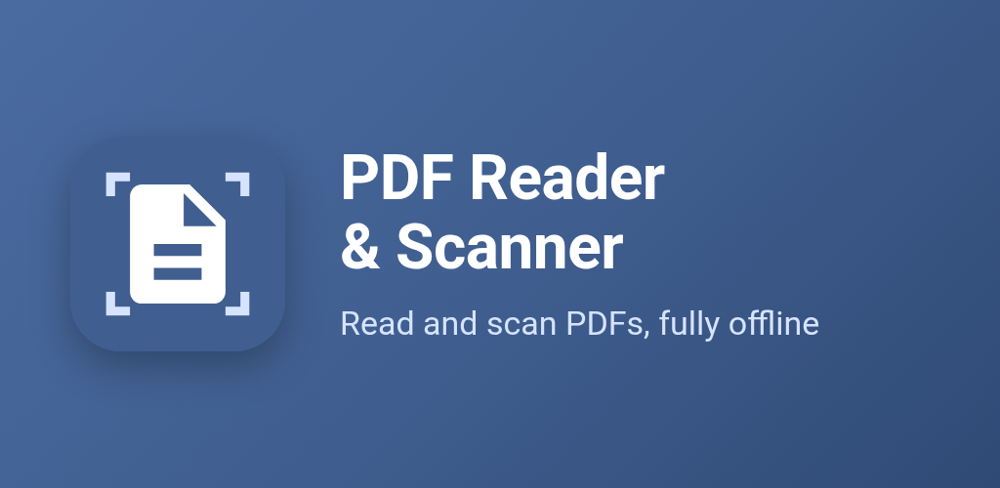
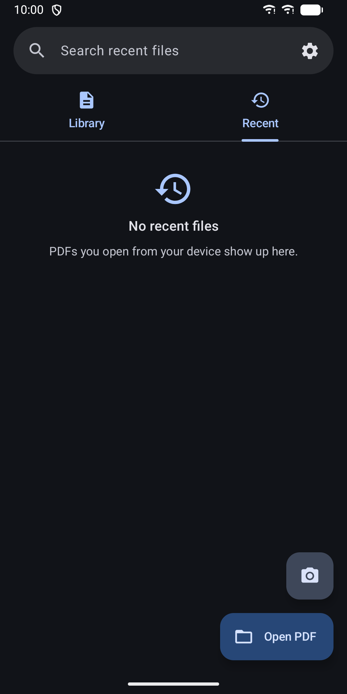
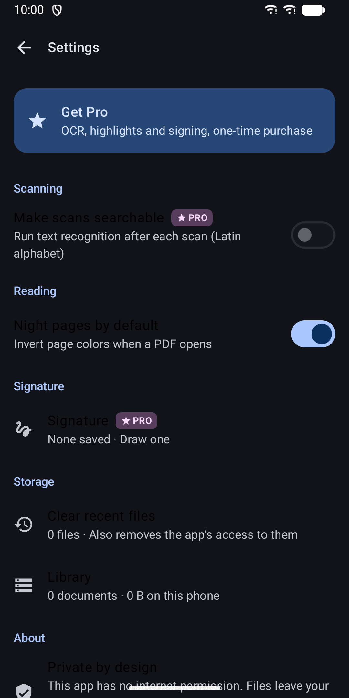

Lector y escáner de PDF
Lee, busca, escanea y firma PDF en tu móvil.





Acerca de la app
Un lector de PDF y escáner de documentos rápido y privado. Funciona sin conexión, no muestra anuncios y no tiene permiso de internet, así que tus archivos no salen del móvil salvo que tú los compartas o exportes. LEE PDF • Abre PDF del móvil, de apps de la nube o con «Abrir con». No necesita acceso a todos tus archivos. • Desplazamiento vertical fluido a todo el ancho, en móviles y tablets. • Continúa en la página donde lo dejaste. • Índice para los PDF que lo incluyen. • Busca texto en PDF que ya tienen capa de texto. • Páginas nocturnas: invierte los colores de la página para leer a oscuras. La app sigue el modo claro u oscuro del sistema. • PDF protegidos con contraseña en Android 15 o posterior. • Lista de archivos recientes que puedes borrar cuando quieras. ESCANEA DOCUMENTOS • Detección de bordes y recorte con el escáner de documentos de Google ML Kit. • Escaneos ilimitados, sin marca de agua. • Los escaneos se guardan como PDF en una biblioteca privada en tu móvil. • Busca, ordena y renombra tus escaneos, con miniaturas de página. • Añade y elimina páginas de un escaneo guardado. • Exporta a cualquier carpeta o comparte como PDF. PRO: PAGO ÚNICO • Escaneos con búsqueda: el reconocimiento de texto se ejecuta en tu móvil tras cada escaneo y también funciona con PDF que solo contienen imágenes. • Resalta texto con resaltados PDF estándar que otros lectores también muestran. • Firma documentos con una firma dibujada. Tu firma se cifra con una clave que nunca sale del móvil. • Los cambios se guardan como copia en tu biblioteca. El archivo original no se modifica nunca. • Sin suscripción, sin prueba, sin cuenta. PRIVADO POR DISEÑO • Sin permiso de internet. No se sube nada y no se rastrea nada. • Sin cuenta y sin analíticas. • La biblioteca queda excluida de las copias de seguridad. • Sin anuncios. WIDGET PARA LA PANTALLA DE INICIO Tus tres últimos escaneos o PDF abiertos y un botón para escanear con un toque. Disponible en español, inglés y alemán. Escanear y Pro requieren los servicios de Google Play. La lectura funciona sin ellos. El reconocimiento de texto es compatible con el alfabeto latino.